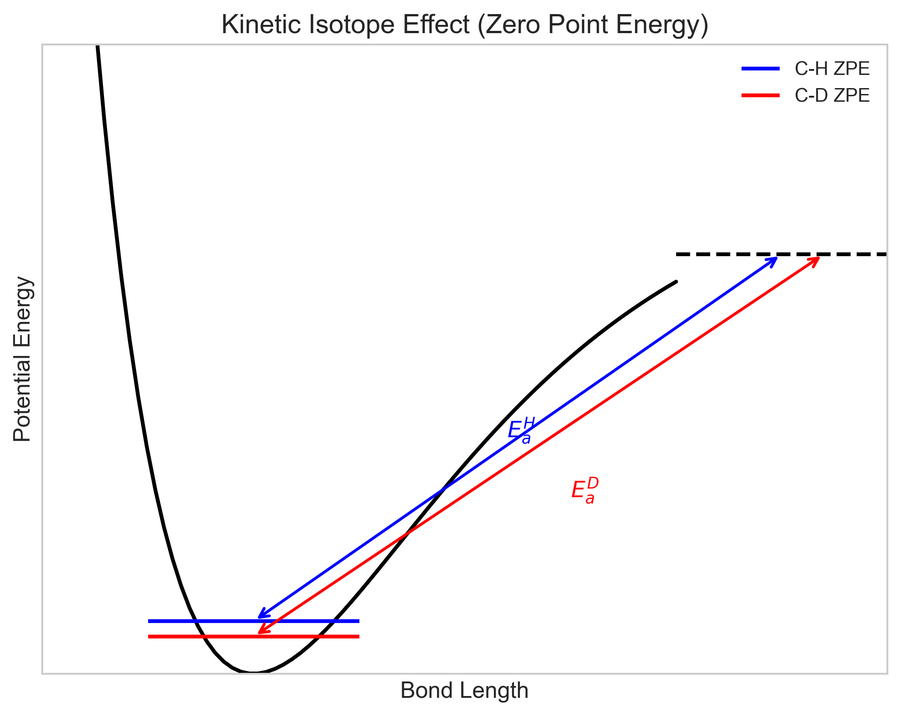
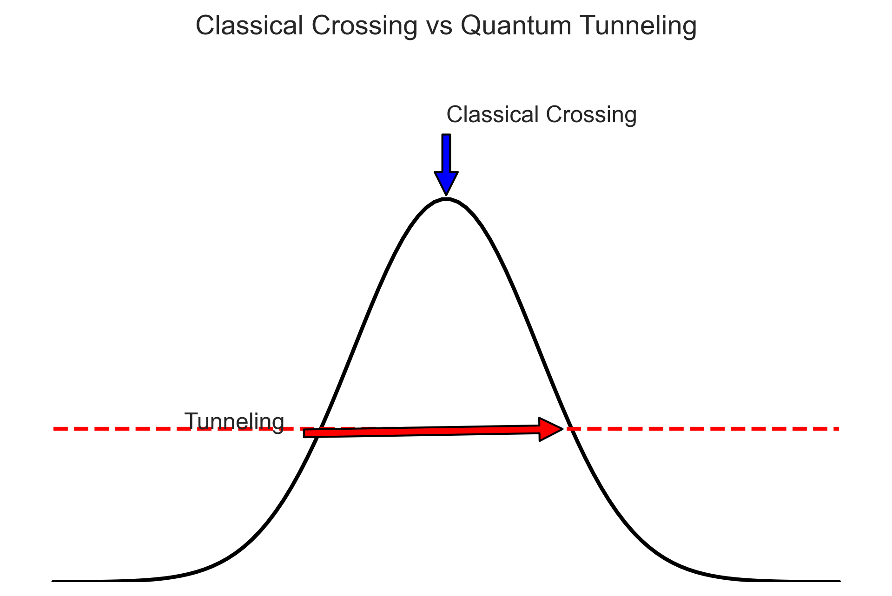

Reaction Dynamics • Physical Chemistry
The Activated Complex
Focus on the species at the top of the energy barrier: the Activated Complex ($C^\ddagger$).
Assumes $C^\ddagger$ is in quasi-equilibrium with reactants.
Deriving the rate constant from statistical mechanics:
Expanding $\Delta^\ddagger G^\circ = \Delta^\ddagger H^\circ - T\Delta^\ddagger S^\circ$:
Corresponds to Activation Energy ($E_a$)
Corresponds to Pre-exponential Factor ($A$)
Myth: "The Transition State is a short-lived intermediate that can be isolated."
Reality:
Linearize the equation:
For ions in solution, ionic strength ($I$) affects the rate.
Select Charges:
Replacing H with D changes the rate.
Due to Zero-Point Energy differences. C-D bond is stronger (lower ZPE) than C-H.

Question: Why is the Kinetic Isotope Effect ($k_H/k_D$) typically much larger ($\sim 7$) than the ratio of mean speeds ($\sqrt{2} \approx 1.4$)?
Answer: (B)
The primary cause is the difference in Zero-Point Energy (ZPE) at the ground state. C-D has a lower ZPE than C-H, meaning it requires more energy to reach the same transition state.
Particles can pass through the barrier, not just over it.

Explore these concepts in the Jupyter Notebook:
Scan to open on mobile